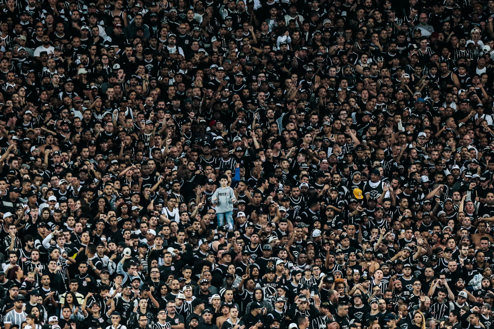

O Corinthians teve diversos ídolos ao longo de sua história. Entre os mais lembrados estão Sócrates, Marcelinho Carioca, Neto, Cássio e Ronaldo Fenômeno. Esses jogadores marcaram época e ajudaram o clube a conquistar títulos importantes.
Sócrates foi um dos maiores símbolos do Corinthians e liderou o movimento conhecido como Democracia Corinthiana. Já Marcelinho Carioca ficou famoso por seus gols e cobranças de falta, tornando-se um dos maiores artilheiros da história do clube.
A torcida corinthiana é considerada uma das maiores do Brasil. Conhecida como Fiel Torcida, ela acompanha o time em todos os momentos, lotando estádios e demonstrando apoio incondicional.
A principal torcida organizada é a Gaviões da Fiel, fundada em 1969. Além de apoiar o time nas arquibancadas, a torcida participa de diversas ações sociais e culturais ligadas ao clube.
| Ídolos | Características |
|---|---|
| Sócrates | Líder da Democracia Corinthiana |
| Marcelinho Carioca | Especialista em cobranças de falta |
| Cássio | Herói da Libertadores e Mundial |